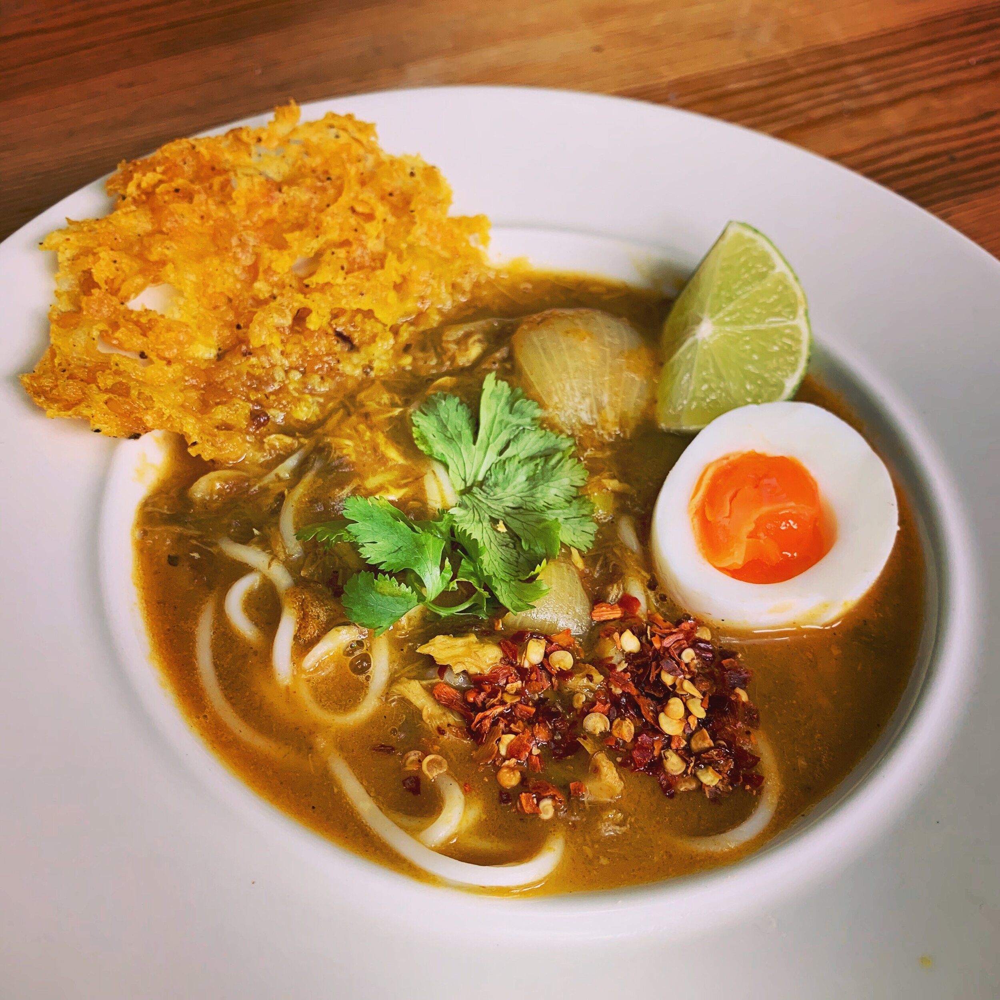

Mohinga (Fish Noodle Soup)
Home

Description
Mohinga is Myanmar’s national dish — a comforting fish broth with rice noodles.
Ingredients
200g rice noodles
1 fish fillet (catfish or tilapia)
1 onion, chopped
2 garlic cloves, minced
1 lemongrass stalk, chopped
1 tbsp fish sauce
1 tsp turmeric
2 boiled eggs (optional)
Banana stem or cabbage slices
Water, salt, and oil
Directions
Boil fish with lemongrass, turmeric, and salt.
Debone and mash fish; reserve broth.
Sauté onion and garlic, then add fish and broth.
Simmer with fish sauce; add noodles and garnish with egg and cabbage.